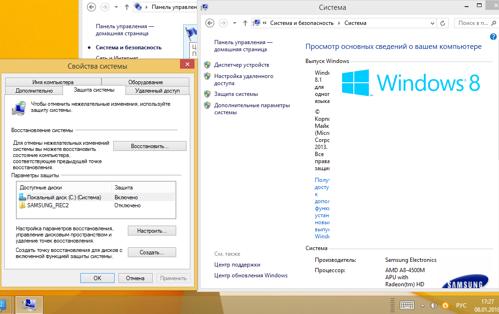
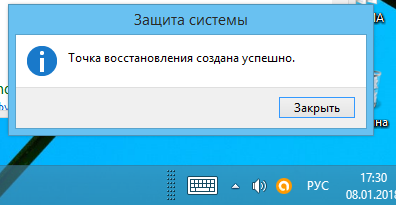
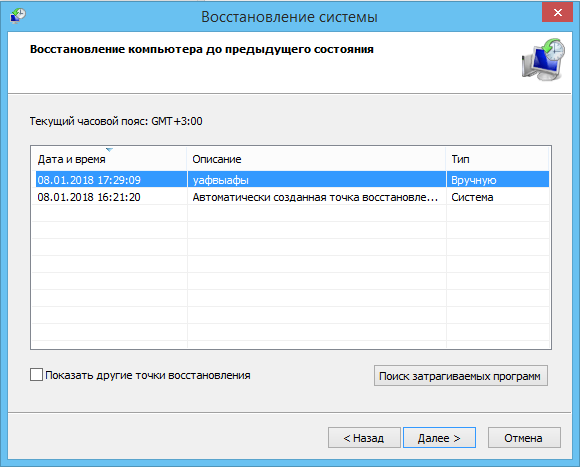
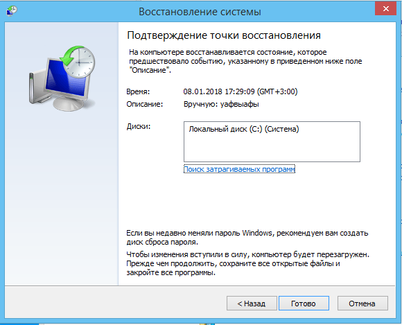
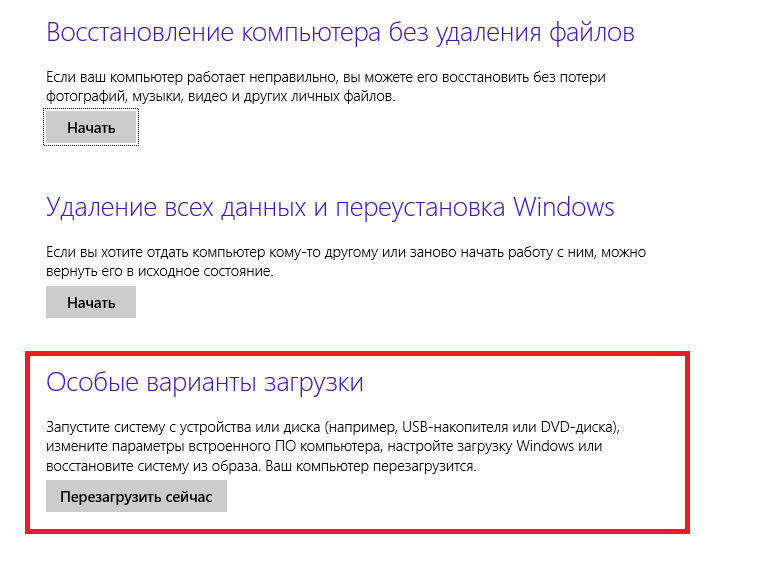
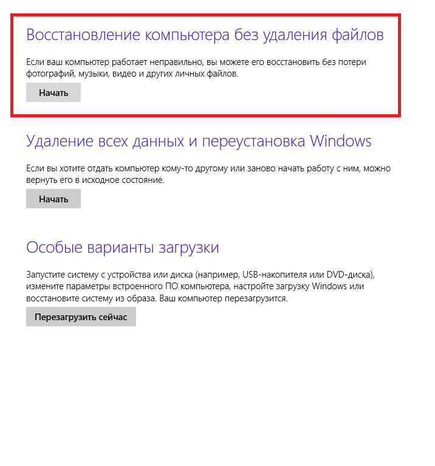
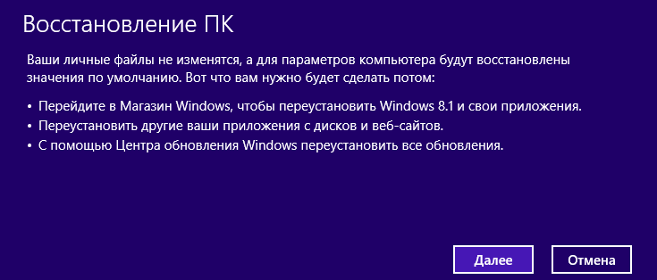
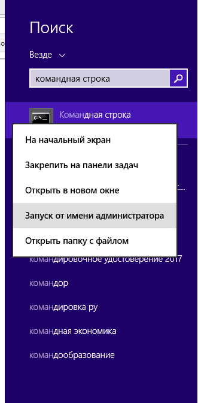
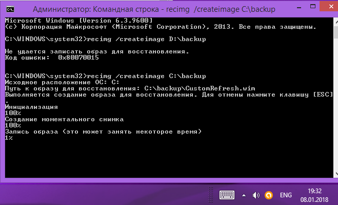

Средства оперативного востановления системы Windows
Откат системы windows 8 через точку восстановления.
Режим, доступный и в старых версиях Windows, осуществляет откат к конфигурации, сохраненной на момент создания точки.
Не сохраняется ни одна установленная после этого программа, теряются данные реестра. Для реализации данного способа необходим доступ к среде восстановления или способность ОС к самостоятельной загрузке.
То, сколько раз в день создавать точки восстановления, пользователь может решить самостоятельно.




Восстановление образа виндовс 8.
Система откатывается назад до момента создания образа, удаляется вся записанная позднее информация с диска и устанавливается сохраненная. Средство реализуется через среду восстановления, необходимо наличие образа на диске или съемном носителе. Именно в таких случаях ранее созданный образ системы пришелся бы как нельзя кстати. При его наличии восстановление нормальной работоспособности компьютера займет совсем немного времени. Но если вы поленились в свое время создать резервную копию системного раздела, то тогда готовьтесь к полной переустановке и настройке Windows, а так же всех приложений.
Полная переустановка ОС через загрузочный диск или заводской образ из скрытого раздела и возврат к изначальным настройкам. Теряются все пользовательские файлы и документы, которые находятся на диске, данные реестра, после чего целый день тратится на установку новых драйверов и приложений.

Средство Refresh Your PC
Подобная функция используется в случае, когда ОС запускается, но работает нестабильно. При этом откат к точке не изменил ситуацию.
Способ подразумевает полную переустановку Windows 8, но без затрагивания файлов пользователя. Для этого нам понадобится дистрибутив системы, размещенный на флешке или диске.
Изменения не коснутся:
Абсолютно всех документов владельца (фото, музыка, видео и т.д.);
Файлы на рабочем столе так же не будут затронуты на своих местах;
Windows магазина будут сохранены;
таким методом не затронет и сетевые настройки.
Единственное, что будет удалено – файлы, установленные в системную папку Program Files. Помимо этого все персональные настройки владельца будут сброшены до базовых.
Запускаем приложение Refresh Your PC на момент, когда система работает. Для этого переходим в раздел параметров и дальше меняем их значение:
 Переходим в раздел восстановление и выбираем первый пункт "восстановления компьютера без удаления файлов"
Появляется окно предупреждения, в котором описаны все изменения, вступающие в силу после начала процедуры.
Перед тем как нажать далее нужно вставить устройство с дистрибутивом Windows 8
Как только устройство с системой было обнаружено, начнется перезагрузка ноутбука для подготовки системы к процессу восстановления. Кликаем восстановить. Дальше никакие вторичные действия от пользователя не нужны, процедура полностью автоматическая. Приблизительное время отката до базовых настроек составляет 20-40 минут в зависимости от мощности ноутбука.
Восстановление системы Windows без дистрибутива
Уникальный только для Windows 8 и 8.1 режим, позволяющий системе, не имеющей возможности загрузиться, восстановить работоспособность и сохранить пользовательские файлы. Теряются только установленные приложения, за исключением программ из Metro. Использование функции Refresh Your PC позволяет откатить систему даже в самых безысходных ситуациях. Но нередко у пользователя попросту нет внешнего носителя с установочными файлами.
Подобная проблема решается созданием образа системы, используемого вместо основного дистрибутива на диске.
При использовании такого варианта, настройки пользователя будут не возвращены на базовые, а откатятся на момент создания образа.
 Создают образ при помощи средства, запускаемого из командной строки – Recimg.exe. Запускаем консоль через поиск: нажимаем WIN+W, ищем командную строку и запускаем от имени администратора.
 Вместо диска D вписываем любой носитель, на котором планируете создать образ системы. Далее создается образ диска, который занял много времени.
 Наличие следующих надписей говорит о том, что создание образа прошло успешно. Дальнейший алгоритм восстановления полностью аналогичен Refresh Your PC.
Наличие следующих надписей говорит о том, что создание образа прошло успешно. Дальнейший алгоритм восстановления полностью аналогичен Refresh Your PC.